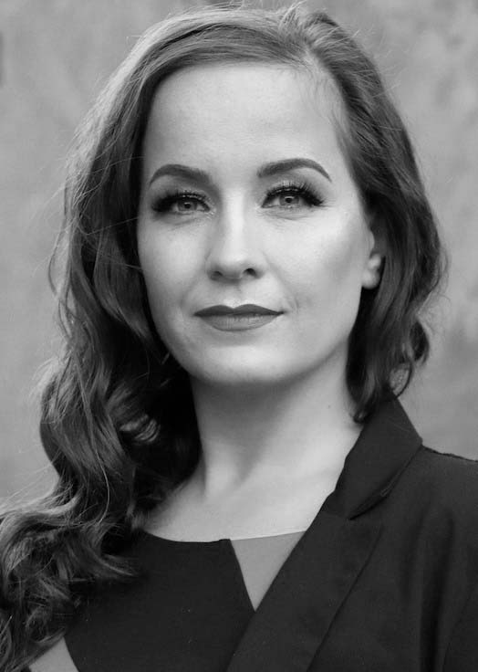
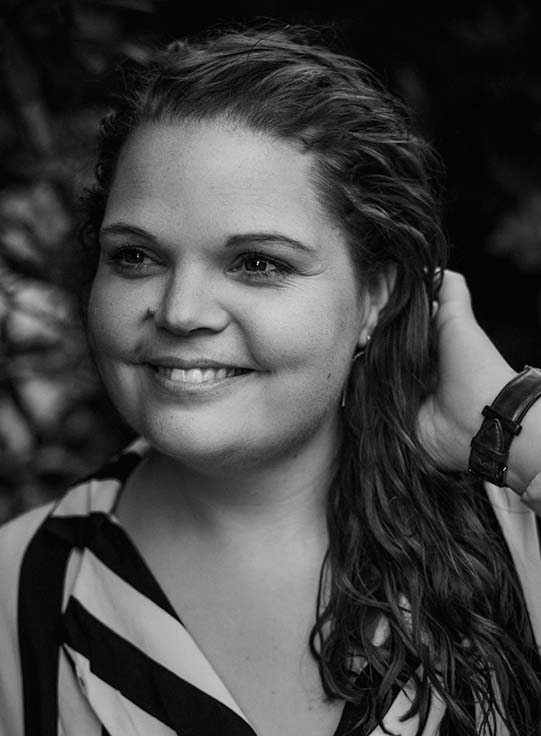

Lær mere om os
Foreningen Horsens Musical Teater blev oprettet i september 2019.
Foreningens formål er, med professionel tilgang, at skabe og producere musicals med unge - Primært i alderen 16-28 år. Vi ønsker at skabe et fællesskab for unge, der deler passionen for musicalgenren, hvor der er fokus på talentudvikling for skuespil, sang og dans. Vi stræber efter et niveau, der vil kunne forberede dem til branchens professionelle uddannelser.
Vi har et talentfuldt performancehold, som er parat til at rykke ud med underholdning til events, firmafester og andet.
Bag og foran scenen
Som forening vil vi også skabe de bedste rammer for alle de frivillige der ønsker at benytte deres kompetencer og samtidig dygtiggøre sig på de andre områder, ved at lære og samarbejde med de andre kreative mennesker, der danner rammen for produktionen af vores musicals og events som helhed.
Den Kreative Ledelse
Ingen Horsens Musical Teater uden en dygtig kreativ ledelse.

Louise Elisabeth Robinson

Maria Norby Gjødsbøl
Hans Bergur Nielsen
Bestyrelsen
Bestyrelsen består af følgende personer:
Hans Nielsen, formand
Jon Nergård Kobberøe, næstformand
Johnna Wennerwald, kasserer
Maia Kirkedal Pedersen, PR ansvarlig
Henriette Hansen, medlem
Susan Gyldenkilde, medlem
Torben Simonsen, medlem
Nikolaj Key, 1. suppleant
Anne-Dorte Østergaard Andersen 2. suppleant
Meld dig ind i foreningen
Du kan blive medlem af vores forening. Som medlem kan du deltage i vores workshops og andre aktiviteter. Som medlem inviteres du ligeledes til vores generalforsamling, hvor du har stemmeret. Tilmeld dig i formularen på siden.
Medlemsskab koster 200 kr. årligt og gælder for kalenderåret (jan-dec).